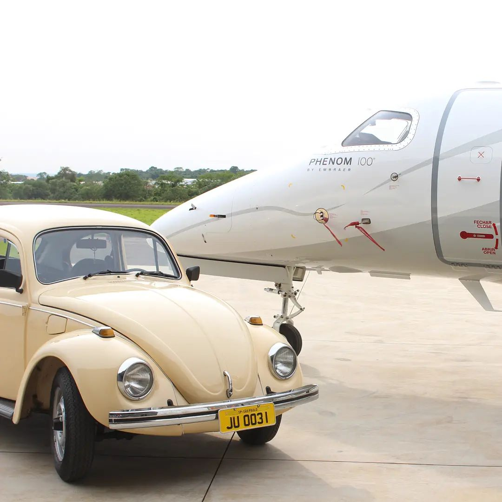
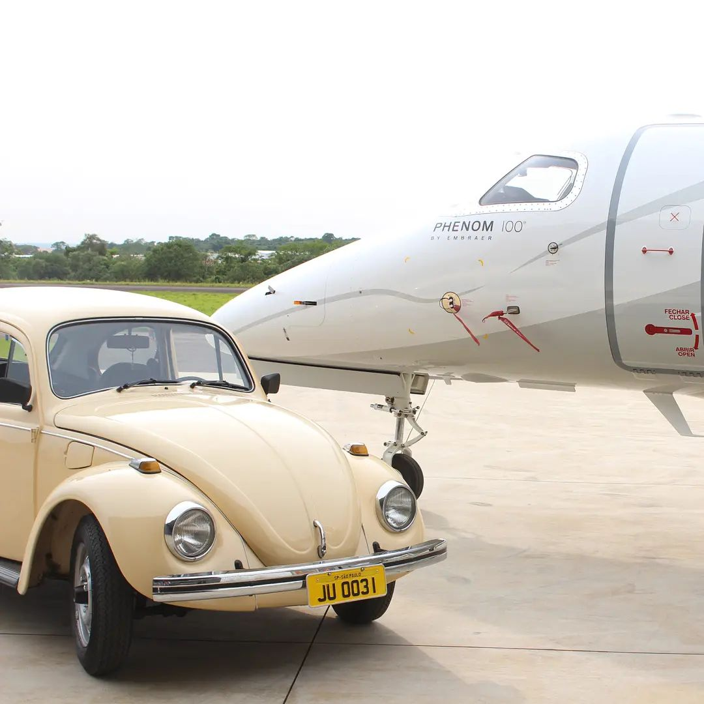

UM POUCO SOBRE NOSSA MAQUINA
O Fusca é muito mais que um carro. É uma memória afetiva sobre rodas, um símbolo da cultura
automotiva
brasileira. Em 1979, ele já era um fenômeno — agora, volta como ícone retrô que atravessa gerações com
charme e simplicidade.
Robustez, economia e mecânica confiável são marcas registradas do Fusca. Ele foi feito para durar, com
peças
simples, fácil manutenção e um motor que faz história. Compacto por fora, espaçoso por dentro — um
verdadeiro parceiro para todas as ocasiões.
UM CARRO OU UM AVIÃO?
Se você já ouviu o ronco do motor do Fusca, sabe: ele lembra o som de um avião antigo. Isso não é
coincidência —
o motor boxer refrigerado a ar tem herança aeronáutica. Seu desempenho todo-terreno e estabilidade em
qualquer
tipo de solo fazem dele quase um jato sobre o asfalto.
TUDO QUE VOCÊ PRECISA, POREM, MUITO MELHOR
Motor: 1.3 Boxer 4 cilindros, refrigerado a ar
Potência: 46 cv
Velocidade Máxima: 125 km/h
Câmbio: Manual de 4 marchas
Consumo médio: até 12 km/l
Tração: Traseira
Peso: 800 kg 😮😮
 
